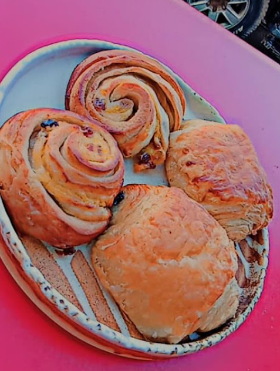
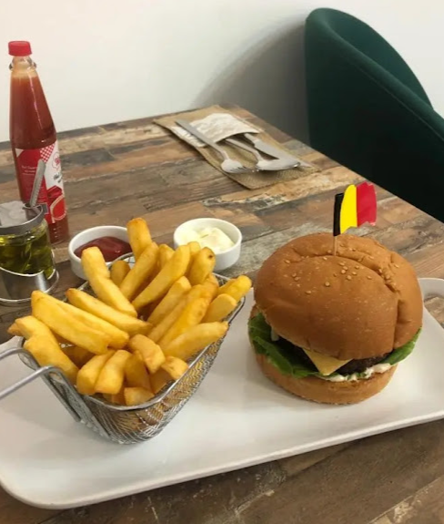
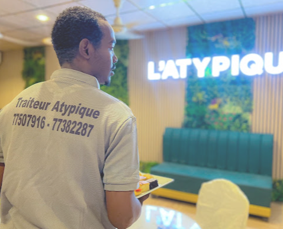

Djiboutian speciality
Traditional favourites
Mofō (Gambo), Heed (Boqa), lait de chamelle and lait de chèvre.
From 500 FDJA taste worth sharing
From comforting café favourites to generous meals made for sharing — discover the flavour of L’Atypique.
Whether you’re stopping by for a casual bite, catching up over coffee, or bringing everyone together for a special occasion, we’re here to make it memorable. Come hungry, leave happy.
Come say hello ↗
Freshly prepared · Made for sharing
From crispy, golden bites to satisfying favourites, there’s always something worth coming back for.
See what’s cooking ↗
Restaurant · Café · Traiteur
Hosting a family meal, celebration or group lunch? Let us help take care of the food. Contact our team to discuss your order and catering needs.
Call +253 21 35 05 26 ↗Kind words from our guests
“I visit this restaurant often… the food makes me happy, and the service is really good too.”— Guest review · Google
We’d love to see you
Find us on Route de l’Aéroport, Djibouti. Call for orders, catering enquiries or more information.
Call the restaurant ↗Restaurant · Café · Traiteur
For dine-in, takeaway and catering enquiries